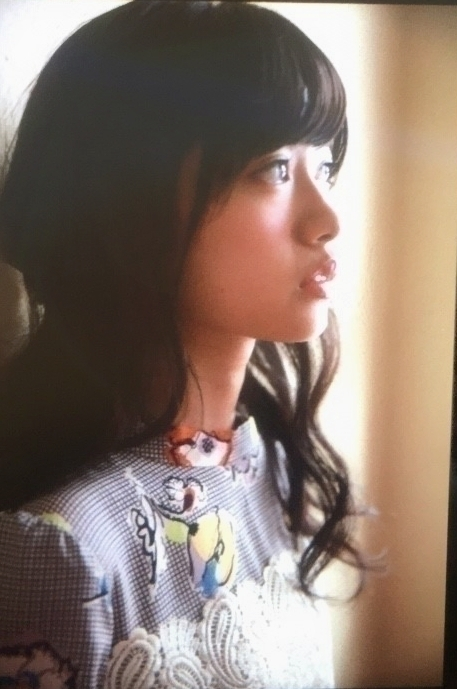

2016/0717Sunなにをみてるの
アニメ「坂本ですが？」
最終回までスタイリッシュで最高に面白かったです。
こういうアニメ大好き
今度はどんなアニメを見ようかなって考えるとワクワクします
最近、うーんって考えてばかりでしたが
アニメ見てる時だけは
ちょっと気持ちが楽になります(^^)
アニメって偉大だ
私ももっと1人でも多くの人に笑顔になってもらいたいを、モットーに頑張ろってアニメをみてて思いました再確認(^^)
そう言えば
・ももくり
・ReLIFE
・初恋モンスター
を観ました
どれも次が楽しみ！
楽しみ過ぎる！！！
アニメ好きの方がいたら
これが自分の好きなアニメなんだーって教えて下さい
もっと色んなジャンルのアニメも学びたい
おはようございます
こんにちは
こんばんは
らんぜの勢いとま
らんぜーーーーー！
寺田蘭世です
宜しくお願い致します
このキャッチフレーズ
自己紹介する機会も
減ったので最近やってないのですが
忘れないで下さいね
握手会でたまにふってくれる方が居るのですが
一緒にキャッチフレーズやってくれると嬉しいです（´-`）
話題に悩んでいる方
良かったら、どうぞ
『アルバム個別握手会in横浜』
太陽ノックデニムver

首元にご注目
川後さんのをお借りしました。
嫉妬の権利 紫ver
ポピパッパパー

ハルジオンが咲く頃
命は美しい
を着ました！
お衣装での握手会は
とても楽しかったです！
また、いつかアルバム個別握手会をやるとしたら
そのときが楽しみです！
心から
ありがとうございました！
そして、先日の事
頭の上に蜂が止まりました。
その他にも色々と
運が悪いのかここ最近は
捻挫した方の足
癖でまた捻挫しやすくなっているのに
（ちなみに、左足なのですが）
やたら左足だけ
道の溝にストンとハマって落ちたり
小石を踏んで
転けそうになったり
私、そんなに
悪い事したかなとか
考えつつ凹むのですm(._.)m
きっと今はそう言う時期なんだろうなって飲み込んでます。
人生は冷静に振り返った時
トータルで
平等になるように
いい時期と悪い時期がある
私はそれを信じるタイプの人間です。
だから多分
秋冬
凄くいい事があると
信じ生きていきますm(._.)m
それと、東京喰種でも
何か言ってた気がしますが
カネキくんが白カネキくんになる寸前で神代利世さんが何か言ってた気が、、、
何だったっけ
「当人の実力不足」
この言葉を聞いてから
本当、運とか運命ってあると思うんです
でも、最低の中の最高を得るには自分が備えておかなきゃいけないなって
だから、この言葉を知ってから運任せにはし過ぎないって決めました。
やっぱり、アニメ
再びアニメの話に戻ってきてるアニメって名言が沢山あるから好きですm(._.)m
15枚目シングルについては
また、MVが解禁されてから感想とか詳しく書きますね。
『お知らせ』
7/15 ヤングガンガン さん
AKB新聞 さん
7/23 UTB Vol. 245 さん
幻の１曲を初公開！！
さゆりんご軍団の
「さゆりんごが咲く頃」！！
『HappyBirthday』
北野氏
お誕生日おめでとう
直接メールしました
だから、ここでは短めに、、、m(._.)m
皆さんの前だと
恥ずかしいからね
今シングルは
前回みたいに
一緒に活動できないけど
また、お互い
もっといい場所で
目指している場所に向かって頑張ろうね。
『おまけ』
最後はヤングガンガンさんのオフショットにて
 ちなみに、次回号は
付録のICステッカーテラダverがあります
大変、ありがたいですm(._.)m
ヤングガンガンさんの
撮影凄く楽しかった
メイクとかお衣装とか
撮影の雰囲気とか
全部全部楽しかった
今回再び未公開カットを
出させて頂けて
嬉しい限りです。
宜しくお願い致しますm(._.)m
2016/07/17 15:12


コメント(865)
この前の握手会楽しかったー！
最近、蘭世のモバメ取り出したよ〜！
今週は大阪でのライブやね〜！
楽しみやな！
京都のシロクマあつき
最近蘭世のモバメも取って蘭世充してる！
握手も券取ったし早く会いたいよ〜！
あたしも坂本ですが？すき！！
今期は、半田くんみてるよ！！！おもしろいよ！！
らんぜもよかったらみてね〜（；＿；）
自分も見てますଘ(੭ˊ꒳ˋ)੭✧
comicoでよんでるよー
白米様今日のぎのので
初放送？だね！
蘭世への愛がとまらんぜ！
ガンバやで！
この前の握手会は、とっても楽しかったよー
ありがとう！
モバメでいろいろ考えてるのわかったから、元気になってくれてうれしいたけだよ！(^^)
元気で明るい蘭世が、1番好きだよ！
全ツも始まるし、体に気をつけて元気にがんばれ！！
一緒に最高の夏にしようね(^^)(^^)
ブログさんありがとう♪
久々にアニメの話やね！
家に坂本ですがの漫画あるから読んでみようかな？
最近上から撮るのはまってんの？笑
真面目な話はお手紙にて
届かなかったらどこかでゆっくり話そうかね^^;
かわいいね
キャッチフレーズ今度振りますね(^O^)
オフショット良き良き
ヤングガンガン買いますねー
と握手したいよー
行った時はたくさんアニメの話したい！
全ツ見に行くから頑張ってね！
ブログありがとう…！
運が悪いことが重なる時期ってあるよね。・゜・(ノД`)・゜・。
自分も今日乗る予定の飛行機が天気で欠航してしまって、なんだか沈んでます…
自分の不運の分、使ってない幸運を蘭世にあげます！笑
いいことがあるといいね✨
15thは全握も個握も日程が悪くて行けないなぁ…
蘭世さんに早く『はじめまして』したいです(*ﾟДﾟ*)
これからも応援してるね(´◡`๑)
お互い頑張りましょー✨
これからバイトだから
落ち着いたらもっと長めに書くね！
あ、今日の乃木のの聴くね。
白米様解禁だもんね。
ブログ更新ありがとう＼(^o^)／
モバメも毎日ありがとね！
坂本ですが？観てたんだ！
握手会の時話せば良かった。。。
自分もアニメ好きだから、
次からの握手会はアニメのこととか話してみたい( ´ ▽ ` )ﾉ
あと、キャッチフレーズも一緒にやってみたい！！笑
15thは初めて2会場分の取れたので楽しみ！
これからもお仕事頑張って！
応援してます(￣^￣)ゞ
んじゃ！
今日乃木のの聞くよー！白米様ってどんな歌詞なんだろ（笑） とりあえず楽しみや(^^)
ライブ早く行きたいよー！ アンダーのフロントおめでとう！
フロントと言う位置に蘭世自身思うことは色々とあるだろうけど、ずっと応援してます！ ダンスの練習も頑張ってるみたいでこっちも頑張ろうってなれる！ そんな蘭世が大好き(*^^*)
これからもよろしくね(^^)
更新ありがとうm(_ _)m
私もこの時期は何かと悩まされますw
けど蘭世はアニメのように
私はやっぱアイドル！なのよねw
蘭世が、頑張ってるとがんばれます^^
力もらえるぞ〜！！ありがとう！
新しいアニメといえば半田くんかな？
蘭世は見てる？？
↑質問！
個握次は9月か〜
後半まで会えないとへこんでたら
上旬に全握があると聞きました^^
今回は悩んでるのよね〜
けど、予定合いてたら
蘭世レーンに遊びに行きます！
じゃっ、またね！
アニメ～～...
わたしもアニメ好きだったんだけど、
最近はなにも見れてないなぁ。。
ずいぶん前のアニメだけど、
わたしは「ちーすい丸」っていうアニメが好きでした！
趣味で元気になれるのはいいことだね(＾＾）
面白いアニメの名言聞かせてください○
最近運悪いって言ってたときは
なにがあったんだろ～？？って思ってたけどそんなことがあったんだね…>_<…
きっと、これからいいことがあるよ…>_<…わたしも願っておきます…>_<…
今日はここまで、、またコメントするね◎
ブログ更新ありがとう＼(^o^)／
モバメも毎日ありがとね！
坂本ですが？観てたんだ！
握手会の時話せば良かった。。。
自分もアニメ好きだから、
次からの握手会はアニメのこととか話してみたい( ´ ▽ ` )ﾉ
あと、キャッチフレーズも一緒にやってみたい！！笑
15thは初めて2会場分の取れたので楽しみ！
自分もよくついてないことあるけど、
世の中平等に出来てるから仕方ないで割り切ってるよ(笑)これからテスト期間だから、なおさら(笑)
蘭世の勢いとま
らんぜーー！！！
これからもお仕事頑張って！
応援してます(￣^￣)ゞ
んじゃ！
蘭世の勢い止まらんぜー！！
、、、9月の個握でやらせていただきます、
東京喰種、確かヤモリも言ってたね、
『この世の不利益は全て当人の能力不足』って。
自分もすごい納得する台詞だったから後々悔いが残らないように精一杯勉強に取り組んでるよ！
『人事を尽くして天命を待つ』ってね（笑）
ブログ更新ありがとー!!
さゆりんごが咲く頃見たよ!!
面白かった!!
運悪いこと連続で起こったら気分悪くなるのわかるよ。俺も最近運悪いことばっかおこるから笑笑
早く15枚目のアンダーの曲のMV見たいなー!!
楽しみにしてます!!
蘭世の勢いとまらんぜ!!
アニメまだ、見てません。
個人的には、リライフ見てない＞_＜
アルバム握手会いきました。
蘭世の勢いとまらんぜ
また(・Д・)ノ貴則
「老人Ｚ」「東京ゴッドファーザー」面白いですよ。
「東のエデン」も好きですね。
よろしければオススメです。
今年の夏は勝負であり天王山であるから、11月の握手会いきたかったけど、やめとくね、、、
だから受験後に、ちゃんと現役合格してらんぜの握手会いきたいな！その時は是非選抜で！
フロント入りおめでとう！！
これからもらんぜの勢いとまらんぜってな感じで期待してます！
大丈夫！ 自身持ってお仕事しなね(*^^*)
笑ってる蘭世をもっと見てたい(^^)
俺もこないだの試合は最低限の最高だった^^;
満足せず何事にも向かっていかなきゃね！
力が伝わる文章がある蘭世のモバメにいつも救われてる！
それじゃまた書きたくなったこと何回もコメントするかもだけどゴメンね^^;笑
スポーツアニメ好きです！
寺田蘭世様
握手会楽しかった。９月の握手会も楽しみです。
蘭世に、新しい応援グッズ見せないと！
夏バテしない様にさしてね。
全ツー頑張ってね。神宮楽しみです。
コメント失礼しますm(_ _)m
自分も「ももくり」「ReLIFE」「初恋モンスター」見てます。
次回が楽しみ。自分がおすすめするアニメは「はんだくん」「orange」「クオリディア･コード」etc……です！
機会があったら是非見てみてください！
長ったらしくてすみません。m(_ _)m
握手会で蘭世におすすめしてもらってReLIFE見てみたよ！
やっぱり知ってるやつだった！笑
俺も最近おもいっきり足の小指ぶつけたり階段で躓いたりいい事ないけど秋、冬でいい事あるといいな(笑)
写真いっぱいで嬉しいたけ。
今日は、乃木のので白米様流れるね。聞いたらまた感想書きます。
幸運の女神に後ろ髪はない。
備えよ、ですね。
どんな曲か楽しみだよ（≧∇≦）
さゆりんご軍団の活動めっちゃ好きだから、これに留まらず頑張って欲しいです！
さゆりんごが咲く頃のMV、僕は見たよ。らんぜちゃん、めっちゃかわいかったよ。
さゆりんごが咲く頃、めっちゃいい曲ですね。
７月２２日、２３日の乃木坂46 真夏の全国ツアー2016 大阪城ホールでのライブ、どちらも行けないです。らんぜちゃん、ごめんなさい。僕は、めっちゃ行きたかったです。
１枚目の写メのらんぜちゃん、めっちゃかわいいです。
らんぜちゃん、体調に気をつけて仕事頑張ってね。
またコメントするね。
らんぜの勢いとまらんぜ！。
さて、良いこと、悪いこと、いろいろあります。
誰でも同じだと思います。
力を抜いて頑張りましょう。
この前握手会楽しかったよー
アニメはホント日常を忘れる
いい時間になるよね笑
リゼロ見てるかな？面白いよ
色々あると思うけど、僕は考えすぎないのが
1番だから深く考えないようにしてる！
頑張ってねー
アニメって素晴らしいですよね。魂が込められているきがします。
坂本ですが
漫画は少し読んだことあるよー
アニメはやってたの知らなかった。
面白かったし観てみたいな！
握手会でこんどキャッチフレーズやってもらおうかな^ ^
よく考えたらまだやってもらったことないし！
握手会
横浜ありがとうね！
楽しかったです^ ^
太陽ノックの衣装見れたのがめっちゃ嬉しかった！
頭の上に蜂がとまるってものすごい怖い( ；´Д｀)
捻挫また気をつけてね(・Д・)ノ
いい時期すぐ来るよ、きっと！
ヤングガンガン買うねー
オフショット見るとやっぱり雑誌欲しくなる 笑
またどんどん載せてください！
きいちゃんおめでとー
蘭世にまた早く会いたいよ！
先週の握手会を思い出してしばらく仕事頑張る！
そして次回の握手会、蘭世に会うのをモチベーションにして仕事頑張る！
それでは
またブログ更新待ってます！
ライブ頑張れー
蘭世にいいことありますように
実写化されるみたいだから四月は君の嘘のアニメ見たけどよかったよ♪
ピアノ全くひけないけどピアノしたくなったしね！笑
個人的には漫画の方が見る方が多いからアニメはあんまわからないから寺田さんのオススメのアニメを見てみようかな(^^)/
ヤングガンガンまだ見れてないから確認してきます(^^)d
コメントする